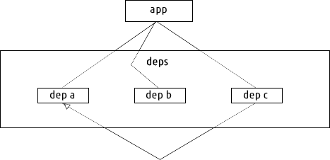
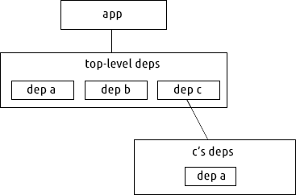

Nested Dependencies
Insight into why node_modules works the way it does
There are a lot of package managers in use today, but the only popular one (to my knowledge) that is designed to support + works by default with nested dependencies is npm.

In the above diagram the deps containers represent isolated sets of dependencies. In most package managers there is only a single 'namespace' for all dependencies. I refer to this behavior as 'flat' because it means you only have one level of discoverability when resolving a dependency, which means you can only have one dependency called 'foo' in your entire app.
Let's look at a close-up example of how dependency resolution works in a flat dependency system.

In this example we have three dependencies. The black lines represent 'depends-on' relationships, so our app depends on a, b and c, and c depends on a. So both our app and c depend on a.
Because the dependencies are flat, meaning we can only have one copy of a in our entire app, it means we have to make sure that both our app and c both depend on compatible versions of a. If we want to upgrade c to a newer version, but that new version also upgrades a to a version that in incompatible with the a that our app depends on, we have a dependency conflict. This phenomenon is referred to as "DLL Hell" (from Windows) or more generally "Dependency Hell".
Let's look at the same example but in a nested system.

Here we don't just have one level of dependencies, we have multiple. Assume a and b have no dependencies. Our app and c both still depend on a.
With nested dependencies we now have two copies of a. If our app needs a at version 1 and c needs a at version 2 then there is we just install both versions of a. The dependencies of c are only available to c, nothing else can access them. Additionally, if it turns out that our app and c both depend on a compatible version of a, we never need to create the c's deps folder -- so the behavior in that case would mimic flat deps (this is how npm dedupe works).
Pros and Cons
Flat
- The simpler of the two designs. It's up to you to decide how much complexity you want to deal with.
- Dependency conflicts (AKA dependency hell)
- Sometimes the only option for languages where you cannot load dependencies in isolation
Nested
- No dependency conflicts
- Encourages use of small, isolated modules
- More complicated
- Good for languages like JavaScript with first class scoping support for isolating dependencies from each other
- Installs multiple copies of dependencies (when necessary), so takes up more disk space (though in practice this is rarely an issue because code is small).
- Confuses users who use dependencies that aren't designed to be modular (e.g. 'Why do I have five versions of jQuery in my browserify app?')